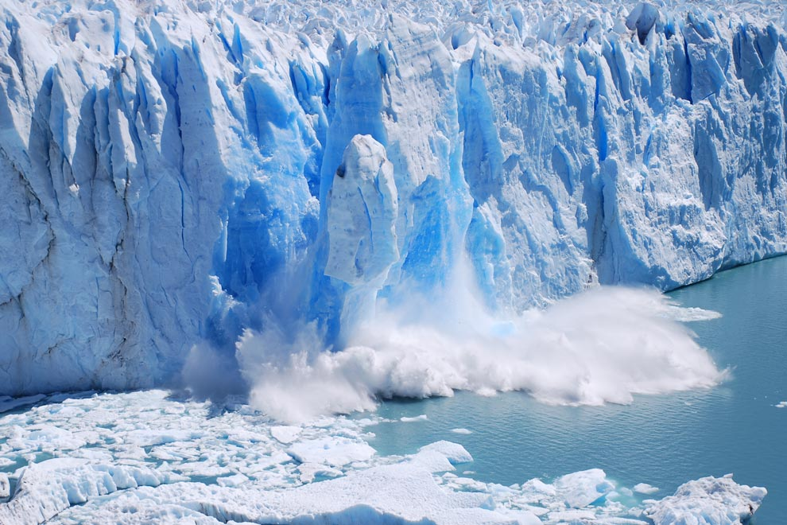
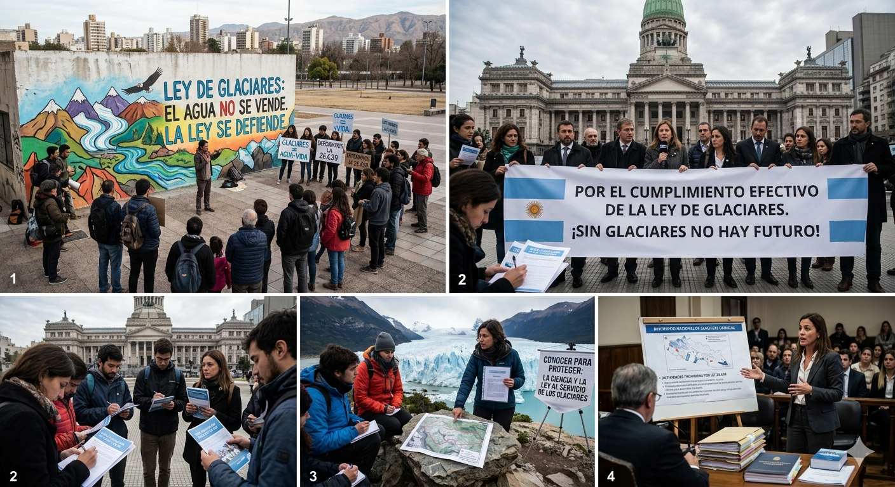
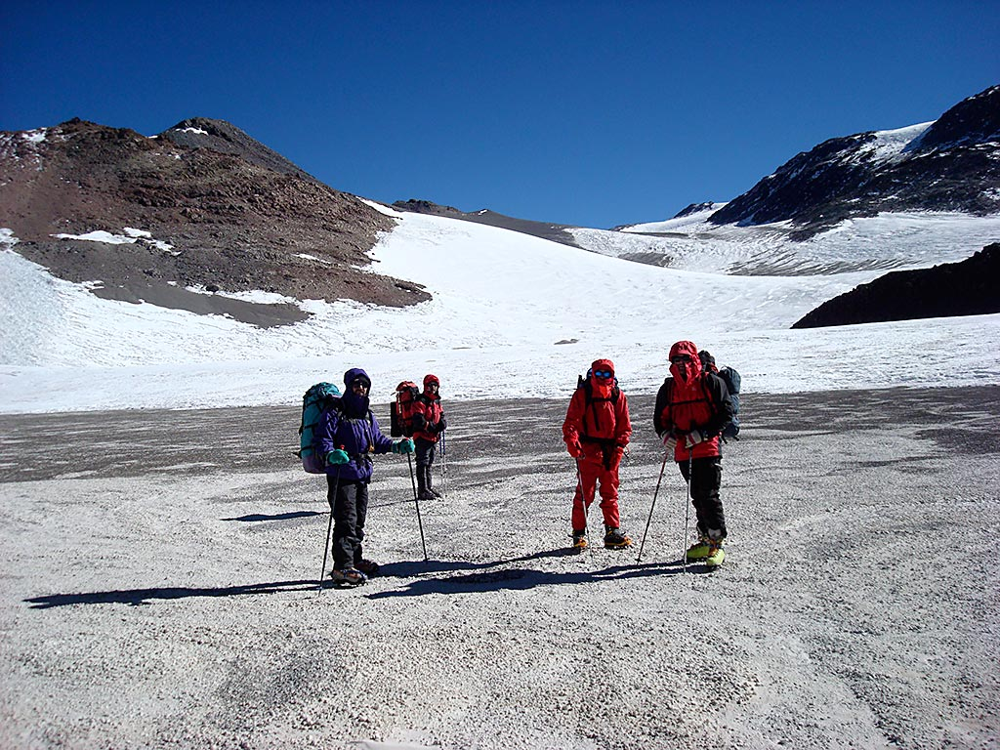

Preservación de Glaciares Argentinos: Proyectos
Iniciativas de Conservación
Trabajamos junto al IANIGLA (Instituto Argentino de Nivología, Glaciología y Ciencias Ambientales) para proteger nuestros recursos hídricos.
Proyecto: Glaciares Vivos
Monitoreo ciudadano y registro fotográfico de masas de hielo en riesgo.
Dirigido a: Entusiastas del trekking y estudiantes.
Cómo participar: Enviando un mensaje desde nuestra página de contacto.

Proyecto: Ley de Hielo
Educación sobre el marco legal y defensa de la Ley de Glaciares.
Dirigido a: Público general y abogados ambientales.
Cómo participar: Asistiendo a nuestras charlas informativas.

Proyecto: Red de Centinelas
Vigilancia activa contra proyectos extractivos en zonas periglaciares.
Dirigido a: Residentes de zonas cordilleranas.
Cómo participar: Registrándote como voluntario de zona.

Resumen de participación
Comparativa de nuestras iniciativas actuales para voluntarios.
| Proyecto | Público objetivo | Dificultad | Modalidad |
|---|---|---|---|
| Glaciares Vivos | Trekkers y Estudiantes | Alta (Terreno) | Presencial (Campo) |
| Ley de Hielo | Público General / Abogados | Baja (Teórico) | Virtual / Charlas |
| Red de Centinelas | Residentes Cordilleranos | Media (Vigilancia) | Híbrida |
Información Relevante
- Ubicación de glaciares: Andes Centrales y Patagónicos.
- Principal riesgo: Actividad minera y calentamiento global.